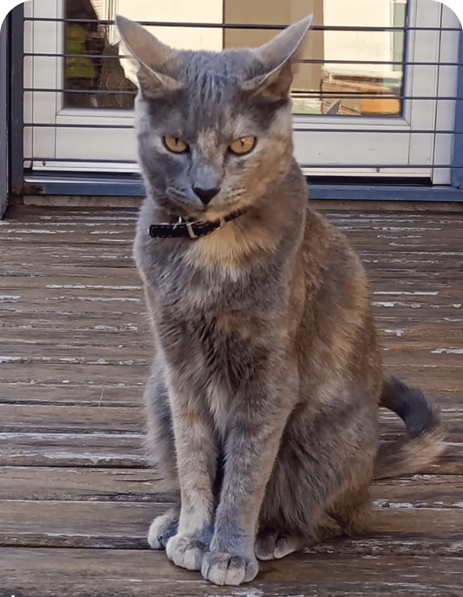

Rhodesia
Soy Rhodesia, un gato joven de un año, curioso y con mucha personalidad, al que le encanta explorar cada rincón, observar todo desde las alturas y disfrutar de largas siestas al sol. Disfruto muchísimo la compañía humana cuando me dan mi tiempo para entrar en confianza, me gusta que me hablen suave, recibir mimos detrás de las orejas y estar cerca mientras hacés tus cosas, pero como no me llevo bien con perros ni con otros gatos, necesito un hogar tranquilo donde sea el único animal de la casa para poder dar y recibir toda la atención.

Curiosa
Joven